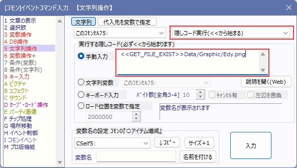

イベントコマンド 【文字列操作・隠しコード一覧】
このページでは文字列変数の「隠しコード実行」で指定可能なコードを紹介しています。

隠しコードを使うと、特殊なパラメータを取得したり、特殊な処理を行うことができます。
隠しコードを使用する場合は、『文字列操作』コマンドを「隠しコード実行（<<から始まる）」にセットし、文字列として以下の文章を指定してください。
【共通の仕様】
【ファイル系】
- 1.ファイルまたはフォルダが存在するか確認する <<GET_FILE_EXIST>>(ファイル名[※Data/から指定])
- 2.フォルダが存在するか確認する <<GET_DIRECTORY_EXIST>>(フォルダ名[※Data/から指定])
- 3.wolfx暗号化ファイルの読込チェック <<LOAD_CHECK_WOLFX_FILE>>(ファイル名[※Data/から指定])
【文字列系】
- 1.文字列の長さを半角1、全角2換算で得る <<GET_STRING_WIDTH_COUNT>>(文字列)
- 2.(数値)の横幅分で文字列をカットして得る (横幅は半角1、全角2) <<CUT_STRING_WIDTH_COUNT=(数値)>>(文字列)
- 3.指定バイトで文字列をカット <<CUT_STRING_(数値1)_(数値2)>>(文字列)
- 4.文字列のバイト数を得る <<GET_STRING_BYTE_COUNT>>(文字列)
- 5.指定行でカット <<CUT_LINE_STRING_(数値1)_(数値2)>>(文字列)
- 6.指定幅で自動改行する <<AUTO_RETURN_STRING_WIDTH_COUNT=(数値)>>(文字列)
【イベント系】
- 1.[マップイベント名]からマップイベント番号を得る <<GET_MAPEVENT_ID_FROM_NAME>>(イベント名)
- 2.[マップイベントID]からマップイベント名を得る <<GET_MAPEVENT_NAME_FROM_ID>>(イベントID)
- 3.[コモンイベント名]からコモンイベント番号を得る <<GET_COMMONEVENT_ID_FROM_NAME>>(イベント名)
- 4.[マップイベントID]からマップイベントの画像ファイル名を得る <<GET_MAPEV_FILENAME>>(イベントID)
- 5.空イベント作成 <<MAKE_EVENT_X=(数値1)/Y=(数値2)>>(画像ファイル)
- 6.空イベントの削除 <<DELETE_EVENT_ID>>(イベントID)
- 7.イベント名を変更 <<SET_EVENT_NAME_ID=(数値)>>(新イベント名)
- 8.コモンイベント番号から名前を得る <<GET_COMMONEVENT_NAME_FROM_ID>>(コモンイベントID)
【画像系】
- 1.[タイル番号の数値]番のタイルファイル名を得る <<GET_TILE_FILENAME>>(タイルセット番号)
- 2.ピクチャの画像ファイル名を得る <<GET_FILENAME_FROM_PICTURE>>(ピクチャIDの数値)
- 3.画像のX、Y座標の不透明度、RGB値を得る <<GET_IMAGE_ARGB_X=(数値1)/Y=(数値2)>>(ﾌｧｲﾙ名[Data/は不要])
- 4.画像の横、縦サイズを得る <<GET_IMAGE_SIZE>>(ファイル名[Data/は不要])
- 5.4つのXY配列に画像を読み込む(画像全体の不透明度、RGB値を得る) <<LOAD_IMAGE_TO_XY(N)/A=(配列1)/R=(配列2)/G=(配列3)/B=(配列4)>>(ファイル名[Data/は不要])
- 6.4つのXY配列(ARGB)から画像出力 <<SAVE_PNG_FROM_XY(N)/A=(配列1)/R=(配列2)/G=(配列3)/B=(配列4)/XSIZE=(数値1)/YSIZE=(数値2)>>(ファイル名[Data/は不要])
【サウンド系】
- 1.音声ファイルの再生時間をミリ秒で得る <<GET_SOUNDTIME>>(ファイル名[Data/から指定])
【合成音声系】
- 1.Windowsの合成音声で読み上げさせる <<MS_VOICE_PLAY/SPEED=(数値)/VOL=(数値)/VOICE=(合成音声名)>>(読み上げ文字列)
- 2.使用可能なWindowsの合成音声名をリストアップする <<GET_MS_VOICE_LIST>>
- 3.Windowsの合成音声が再生中なら1、そうでなければ0を返す <<GET_MS_VOICE_PLAYING>>
【経路探索系】
- 1.経路を探索する <<FIND_PATH_DIR??_SX=(数値1)/SY=(数値2)/EX=(数値3)/EY=(数値4)>>
【システム系】
- 1.ゲーム名の「メイン」を得る <<GET_TITLE>>
- 2.ゲーム名の「追記」を得る <<GET_TITLE_PLUS>>
- 3.DBのタイプAの項目Bが「文字列」項目なら0、「数値」項目なら1を返す
<<GET_ISNUMBER_(C/U/S)DB_ITEM/TYPE=(数値1)/ITEM=(数値2)>>
- 4.XY配列の一覧を返す <<GET_XY_LIST>>
<<GET_XYN_LIST>>
- 5.セーブデータのキャッシュをメモリから全解放 <<DELETE_SAVE_CACHE>>
【共通の仕様】
●(数値)を入力すべき場所に「数値以外の文字」を入力すると、基本的には自動で「0」として認識されます。
●隠しコード先頭の「<<」や末尾の「>>」が抜けていると、文字列変数に「<<Error>> Missing "<<"」や「<<Error>> Missing "<<"」が返されます。
この他にも、パラメータの指定が足りなかった場合は 「<<Error>> Missing ■■」が返されます。
【ファイル系】
【1】.ファイルまたはフォルダが存在するか確認する <<GET_FILE_EXIST>>(ファイル名[Data/から指定]) （Ver2.271以降)
「手動入力」欄を選び、「<<GET_FILE_EXIST>>Data/Graphic/Edy.png」と指定します。
実行されると、「Data/Graphic/Edy.png」が存在すれば格納先の「文字列変数」に「1」が、存在しなければ「0」が文字列として格納されます。
このコマンドはフォルダに対しても1が返されます（ただし、末尾に「/」や「\」が入っていると0が返されます。「Data/Graphic」などと指定してあれば「1」が返ります）。
「?」は任意の半角1文字、「*」は任意の文字列として、ワイルドカード指定が可能です。
【2】.フォルダが存在するか確認する <<GET_DIRECTORY_EXIST>>(フォルダ名[Data/から指定]) （Ver3.241以降）
「手動入力」欄を選び、「<<GET_DIRECTORY_EXIST>>Data/Graphic」と指定します。
実行されると、「Data/Graphic」がフォルダとして存在していれば格納先の「文字列変数」に「1」が、存在しなければ「0」が文字列として格納されます。
このコマンドでファイルを指定した場合は「0」が返るため、「<<GET_FILE_EXIST>>」とうまく使い分けてください。
【3】.wolfx暗号化ファイルの読込チェック <<LOAD_CHECK_WOLFX_FILE>>(ファイル名[Data/から指定])
.wolfx暗号化した(ファイル名)を「Data/～」として指定すると今の状態でその.wolfxファイルが正常に読み込みできるか判定できます。
+ キーが正しく、正常に読み込める場合は「1」が返されます。
+ キーが正しくない場合、「<<Failed>>」が返されます。
+ .wolfxファイルがなかった場合「<<NotFound>>」が返されます。
+ 「.wolfx」を付けずにファイル名を指定しても自動で.wolfxを付けて判定されます。
【文字列系】
【1】.文字列の長さを半角1、全角2換算で得る <<GET_STRING_WIDTH_COUNT>>(文字列) （Ver3.00以降）
「手動入力」欄を選び、「<<GET_STRING_WIDTH_COUNT>>あああAAAA」などと指定すると、[全角2×3]＋[半角1×4]で「10（文字列の長さ）」が取得できます。
改行や特殊文字はカウントしません（ただし「\\」（半角￥マーク）は1とカウントします）。
【2】.(数値)の横幅分で文字列をカットして得る (横幅は半角1、全角2)<<CUT_STRING_WIDTH_COUNT=(数値)>>(文字列)（Ver3.23以降）
「手動入力」欄を選び、「<<CUT_STRING_WIDTH_COUNT=8>>あああAいAAA」などと指定すると、「あああA」が取得できます。(あああA=横幅「7」分。まだ半角1文字だけ入りますが、次の「い」を入れると横幅「9」になってあふれるので「い」は入りません）
特殊文字や改行はカウントしませんが、「\\」（半角￥マーク）は1とカウントします。
「UTF-8」化で「キーボード入力文字列」のバイト数が調節しにくくなったため、入力された文字列を適切な長さに切り取る目的で搭載されました。
【3】.指定バイトで文字列をカット <<CUT_STRING_(数値1)_(数値2)>>(文字列) （Ver3.50以降)
(文字列)の(数値1)から(数値2)バイト目までを切り取って返します。
「<<CUT_STRING_5_8>>ABCDEGGHIJK」なら「GGH」が返され、
「<<CUT_STRING_0_2>>ABCDEGGHIJK」なら「AB」が返されます(1文字目の前は「0」です）。
→ ただしそのバイト値がUTF-8文字(ひらがななら3バイト）の途中になっていたなら、
その「直後」の文字の区切りまで返します。
【4】文字列のバイト数を得る <<GET_STRING_BYTE_COUNT>>(文字列) (Ver3.575以降)
(文字列)部分の「バイト数」の数値を文字列変数に返します。
その後は「変数操作」コマンドで「右辺」に↑で格納した文字列変数を指定し、数字変数に格納してご利用ください。
※たとえば「変数操作」コマンドの「右辺」に「1600005」と入れると、「コモンセルフ変数5」に入った文字列を「数字」に変換して処理できます。
→ これは主に 文字列のカット（バイト切り取り）「<<CUT_STRING_?_?>>」と併用して
使うことを想定したものです。
「前回読み込んだ文字列のバイト数をあらかじめ得ておいて、追加部分だけ切り取る」
といった処理が可能になります。
【5】.指定行でカット <<CUT_LINE_STRING_(数値1)_(数値2)>>(文字列) （Ver3.50以降)
(文字列)の(数値1)行目の始まりから(数値2)行目の最後まで切り取った文字列を返します。「0」が1行目です。
「<<CUT_LINE_STRING_0_0>>ABC(改行)DEF」ならABCが返されます。
「<<CUT_LINE_STRING_1_2>>ABC(改行)DEF(改行)GHI」なら「DEF(改行)GHI」が返されます。
【6】.指定幅で自動改行する <<AUTO_RETURN_STRING_WIDTH_COUNT=(数値)>>(文字列) （Ver3.50以降)
指定幅(数値)を超えないように(文字列)を自動改行した文字列を返します。
幅は半角文字=1、全角文字=2としてカウントされます。
【イベント系】
【1】.[マップイベント名]からマップイベント番号を得る <<GET_MAPEVENT_ID_FROM_NAME>>(イベント名)（Ver3.00以降）
「手動入力」欄を選び、「<<GET_MAPEVENT_ID_FROM_NAME>>エディ」と指定します。
コマンドが実行されると、マップイベントの中に「エディ」という名前のイベントが存在すれば格納先の「文字列変数」に「そのマップイベントID(同名が複数ある場合は一番大きいID）」が、存在しなければ「-1」が文字列として格納されます。
【2】.[マップイベントID]からマップイベント名を得る <<GET_MAPEVENT_NAME_FROM_ID>>(イベントID)（Ver3.00以降）
「手動入力」欄を選び、「<<GET_MAPEVENT_NAME_FROM_ID>>7」などと指定します。
コマンドが実行されると「該当IDのマップイベント名」（「ハカセ」など）が返されます。
該当IDのマップイベントが存在しない場合は「<<NotFound>>」が文字列変数に格納されます。
【3】.[コモンイベント名]からコモンイベント番号を得る <<GET_COMMONEVENT_ID_FROM_NAME>>(イベント名) （Ver3.00以降）
「手動入力」欄を選び、「<<GET_COMMONEVENT_ID_FROM_NAME>>▲装備取得」などと指定します。
コマンドが実行されると、コモンイベントの中に「▲装備取得」という名前のイベントが存在すれば格納先の「文字列変数」に「21」など「そのコモンイベントID (同名が複数ある場合は一番大きいID）」が、存在しなければ「-1」が文字列として格納されます。
【4】.[マップイベントID]からマップイベントの画像ファイル名を得る <<GET_MAPEV_FILENAME>>(イベントID)（Ver3.00以降）
「手動入力」欄を選び、「<<GET_MAPEV_FILENAME>>7」など指定します。
コマンドが実行されると、「マップID12番の今のキャラチップの画像ファイル(CharaChip/[Chara]Doctor.pngなど)」が返されます。
そのIDのイベントがなければ「<<NotFound>>」が返されます。
現在表示されているのがタイル画像なら「<TILE>15」(タイル15番)のように格納されます。
【5】.空イベント作成 <<MAKE_EVENT_X=(数値1)/Y=(数値2)>>(画像ファイル) （Ver3.50以降)
ゲーム中に新たな空のイベントを作成し、作成したイベントの「ID」を数値文字列として返します（23、など)。
・「(数値)」部分には以下の「数値」を指定します。
X=(数値1):設置するX座標
Y=(数値2):設置するY座標
・「(画像ファイル名)」には「CharaChip/aaa.png」のような画像ファイル名、
あるいは「<TILE>32」（タイルセットの32番）のようなタイル番号を指定します。
※タイル番号は32以上でなければなりません（オートタイルは設定できないため）
・その他のオプション <<>>内に「/TR=??」などを追加で入れると反映されます
/TR=(数値):起動条件(1:決定キー 2:プレイヤー接触 3:イベント接触）を設定します。
(「/TR=」は省略も可、その場合は決定キー起動になります)
/HALF:「設置するX・Y座標」が[精密座標](2=1マス)になります。
/COPY=(数値):ID(数値)のイベントをコピーして生成します。
<<DELETE_EVENT_ID>>で消去できなくなるので注意してください
/EXTEND=(数値1),(数値2): 接触範囲拡張を数値で設定します、(数値1)がX拡張、(数値2)がY拡張です。
/SHADE=(数値): 影番号を(数値)で設定します。
/ID=(数値): 生成するイベントのIDを(数値)で設定します。すでにその番号のイベントがある場合、
「<<ERROR>> Invalid ID」が返され、イベント生成は行われません。
/1X1SIZE: 生成するイベントの当たり判定を1×1マスにします（「ゲーム基本設定」で「デフォルトの当たり判定」が「1×0.5マス」の場合だけ意味があります）。
(Ver3.510より)
オプションを全部入れると、
<<MAKE_EVENT_X=3/Y=5/TR=1/HALF/ID=10/COPY=3/EXTEND=4,2/SHADE=1/1X1SIZE>>CharaChip/AAA.png
のようになります。
※1マップ中に作れるイベントは10000個までです。
※/ID=?指定なしで生成されるイベントのIDは「一番番号が若い空きID」が使われます。IDが0番からみっちり詰まってたら新たな最終ID番号が使われます。
※生成されるイベントの「表示優先順位」は常に「後に作った方が上」です。ID番号で負けていても、後に作ったものほど上に表示されます。
※処理失敗時には以下のエラーが文字列変数に返されます。
<<Error>> Invalid ID：/IDオプションで指定したイベントIDがすでに使用されている場合に返されます（イベントIDは「一時消去」では空きませんので注意してください。IDを空けるには後述の<<DELETE_EVENT_ID>>処理を行う必要があります）。
<<Error>> SHADE Limit 0-255：SHADEで指定した影番号が0～255以外になっています。0～255の範囲内で入力してください。
<<Error>> Events Limit 10000：イベント数が1万個になっているのでこれ以上生成できません。下記<<DELETE_EVENT_ID>>でイベントを削除してください。
<<Error>> <TILE> must be >= 32：画像指定において<TILE>にはオートタイル（31番未満）は指定できないため、32番以上を入れてください。
【6】.空イベントの削除 <<DELETE_EVENT_ID>>(イベントID) （Ver3.50以降)
指定した(イベントID)のイベントを削除します。
ただし対象は実質的に「空イベント」である必要があります。
（↑のMAKE_EVENT処理で作られた、ページ1のみ、イベントコマンドが空、決定キー起動か接触起動、の4条件を満たす場合のみ）
削除に成功すると「1 <<OK>>」を返します(Ver3.550より)。
※処理失敗時には以下のエラーが文字列変数に返されます。
<<CanNotDelete>> Not <<MAKE_EVENT..>> Event：対象が<<MAKE_EVENT>>で作られたイベントではないため消去できません。
<<CanNotDelete>> Multiple pages exist：複数ページが存在するため消去できません（主にMAKE_EVENTのCOPY=で作られたイベントで発生）
<<CanNotDelete>> Event contains commands：イベント内にコマンド処理があるため消去できません（主にMAKE_EVENTのCOPY=で作られたイベントで発生）
<<CanNotDelete>> Invalid trigger：起動条件を満たしないため消去できません（並列または自動実行の場合。主にMAKE_EVENTのCOPY=で作られたイベントで発生）
【7】.イベント名を変更 <<SET_EVENT_NAME_ID=(数値)>>(新イベント名) （Ver3.50以降)
イベントID「(数値)」のイベントの名前を(新イベント名)に変更します。
空イベントを作成した後、イベント名をセットしたい場合にご利用ください。
名前変更に成功すると「1 <<OK>>」を返します(Ver3.550より)。
対象が見つからない場合は文字列変数に「<<NotFound>>」が返されます。
【8】.コモンイベント番号から名前を得る <<GET_COMMONEVENT_NAME_FROM_ID>>(コモンイベントID) （Ver3.50以降)
指定した(コモンイベントID)の数値に対応する「コモンイベント名」を取得します。
（コモンイベントID）が-1以下だったり範囲外だと「<<NotFound>>」が返されます。
【画像系】
【1】.[タイル番号の数値]番のタイルファイル名を得る <<GET_TILE_FILENAME>>(タイルセット番号)（Ver3.00以降）
「手動入力」欄を選び、「<<GET_TILE_FILENAME>>1」など指定すると、現在マップの「オートタイル1番のタイル画像ファイル名(MapChip/[A]WaterFall2_pipo.pngなど)」が取得できます。
番号指定は、0なら基本タイル画像、1～31がオートタイル画像です。
タイルセット番号が見つからない場合、文字列変数に「<<NotFound>>」が返されます。
【2】.ピクチャの画像ファイル名を得る <<GET_FILENAME_FROM_PICTURE>>(ピクチャIDの数値)（Ver3.00以降）
「手動入力」欄を選び、「<<GET_FILENAME_FROM_PICTURE>>10001」など指定すると、「ピクチャID10001番に読み込まれた画像ファイル名(「SystemFile/WindowBase_amania.pngなど)」が取得できます。
もしそれが文字列ピクチャなら、ピクチャに指定された「文字列」を返します。
当該IDのピクチャが見つからない場合、「<<NotFound>>」を返します。
【3】.画像のX、Y座標の不透明度、RGB値を得る <<GET_IMAGE_ARGB_X=(数値1)/Y=(数値2)>>(ﾌｧｲﾙ名[Data/は不要]) （Ver3.50以降)
(ファイル名)[例:CharaChip/aaa.png]で指定した画像の、X=(数値1)、Y=(数値2)座標のピクセルの
不透明度、RGB値を「不透明度(改行)R値(改行)G値(改行)B値」の文字列で得られます。
不透明度やRGB値はそれぞれ0～255の値を取ります。
ファイルが見つからなかった場合は「<<NotFound>>」を返します。
指定したX、Y位置が画像サイズより大きかった場合は「<<X_Y_Over>> maxX=?? maxY=??」が返されます。
→ 1枚絵上の「何か画像がある場所」を1マスごとに「不透明度」を取得して
当たり判定に使ったり、「立ち絵のなにもない場所」を調べたりするのに使えます。
→ これを画像全体に一気に行いたい場合は、後述のLOAD_IMAGE_TO_XY(N)の方がおすすめです。
【4】.画像の横、縦サイズを得る <<GET_IMAGE_SIZE>>(ファイル名[Data/は不要]) （Ver3.50以降)
(ファイル名)[例:CharaChip/aaa.png]で指定した画像のサイズを、「横サイズ(改行)縦サイズ」という文字列として得られます。
ファイルが見つからなかった場合は「<<NotFound>>」を返します。
【5】.4つのXY配列に画像を読み込む(画面全体の不透明度・RGB値を得る) （Ver3.50以降)
[数値呼び出しXY配列の場合]
<<LOAD_IMAGE_TO_XY/A=(配列番号1)/R=(配列番号2)/G=(配列番号3)/B=(配列番号4)>>(ファイル名[Data/は不要])
(ファイル名)[例:CharaChip/aaa.png]の画像をXY配列として読み込みます。
（配列番号1～4）には「XY配列の呼び出し番号」を指定しますが、何も入れなければ読み込まれません。
この処理により、画像全体の「アルファ値(不透明度)、R値、G値、B値」が、
A=?/R=?/G=?/B=?で指定した「番号呼出」の各XY配列に保存されます(値の範囲は0-255)。
→ たとえばA=4のXY配列に入れた後、XY配列「4」番のX列1、Y列4の値を読み込むと、その画像の横2ピクセル目、縦5ピクセル目の不透明度が得られます。
成功時は文字列変数に「1」が、ファイルが見つからなかった場合は「<<NotFound>>」が返されます。
[名前呼び出しXY配列の場合]
<<LOAD_IMAGE_TO_XYN/A=(配列名1)/R=(配列名2)/G=(配列名3)/B=(配列名4)>>(ファイル名[Data/は不要])
「<<LOAD_IMAGE_TO_XY/A=?/R=?/G=?/B=?>>(ファイル名)」とほぼ同じですが
(配列名1～4)で指定した「名前(文字列)呼び出し」のXY配列に画像情報が保存されます。
成功時は文字列変数に「1」が、ファイルが見つからなかった場合は「<<NotFound>>」が返されます。
【6】.4つのXY配列(ARGB)から画像出力 （Ver3.50以降)
[数値呼び出しXY配列の場合]
<<SAVE_PNG_FROM_XY/A=(配列番号1)/R=(配列番号2)/G=(配列番号3)/B=(配列番号4)/XSIZE=(数値1)/YSIZE=(数値2)>>(ファイル名[Data/は不要])
(ファイル名)[例:CharaChip/aaa.png]に、「番号呼出」のXY配列(配列番号1～4)番に記述された
A、R、G、B値に従って横幅XSIZE=(数値1)ピクセル、縦幅YSIZE=(数値2)ピクセルのPNG画像を出力します
成功時は文字列変数に「1」が、ファイルが見つからなかった場合は「<<NotFound>>」が返されます。
[名前呼び出しXY配列の場合]
<<SAVE_PNG_FROM_XYN/A=(配列名1)/R=(配列名2)/G=(配列名3)/B=(配列名4)>>(ファイル名[Data/は不要])
「<<SAVE_PNG_FROM_XY/A=?/R=?/G=?/B=?/XSIZE=??/YSIZE=??>>(ファイル名)」と
ほぼ同じですが、各(配列名1～4)で指定した「名前(文字列)」のXY配列の情報がPNG画像として保存されます。
成功時は文字列変数に「1」が、ファイルが見つからなかった場合は「<<NotFound>>」が返されます。
※ARGBのXY配列内の値は、0-255の範囲を格納してください。
※「暗号化されたフォルダ」内には出力できないので注意してください。
もしセーブフォルダ内に出力する場合は(ファイル名)を「../Save/aa.png」のように指定してください。
【サウンド系】
【1】音声ファイルの再生時間をミリ秒で得る <<GET_SOUNDTIME>>(ファイル名[Data/から指定])
（Ver2.264以降)
「手動入力」欄に「<<GET_SOUNDTIME>>Data/SE/effect.ogg」と指定すると、格納先の「文字列変数」に「Data/SE/effect.ogg」の「再生時間（ミリ秒）」の数字が文字列として格納されます。
たとえばeffect.oggが1.3秒の音なら、「1300」の文字列が格納されます。
ファイルが存在しなかった場合は「-1」を返します。
その後は「変数操作」コマンドで「右辺」に「↑で格納した文字列変数」を指定し、数字変数に格納してご利用ください。
※たとえば「変数操作」コマンドの「右辺」に「1600005」と入れると、「コモンセルフ変数5」に入った文字列を「数字」に変換して処理できます。
【合成音声系】
【1】Windowsの合成音声で読み上げさせる <<MS_VOICE_PLAY/SPEED=(数値1)/VOL=(数値2)/VOICE=(合成音声名)>>(読み上げ文字列) （Ver3.60以降）
たとえば「手動入力」欄に「<<MS_VOICE_PLAY/SPEED=1/VOL=100/VOICE=Microsoft Haruka Desktop -
Japanese>>読み上げられる文章です」と指定すると、速度+1、音量100で日本語で「読み上げられる文章です」と合成音声で再生されます。
パラメータはいずれも省略可能で、最小入力だと「<<MS_VOICE_PLAY>>こんにちは」だけでも再生可能です
- SPEED（再生速度）は-10～10までの範囲で指定でき、数値が大きいほど高速で読み上げられます。「0」がデフォルトで、標準速度です。
- VOL（音量）は0～100までで、「Sys102:SE音量補正[%]」の影響を受けます。デフォルトは「100」です。
- VOICE(合成音声名)に指定できるのは、Windows側で認識されている合成音声名です。デフォルト音声はプレイヤー側のWindows設定によって変わると思います。
Windows11の初期状態では、合成音声名として「Microsoft Haruka Desktop - Japanese」か「Microsoft Zira Desktop - English (United States)」のみ指定可能です（長いですが正しく入力してください。これを指定しない場合は「最後に使用された合成音声名」が選ばれている気がします。使用可能な合成音声リストは後述の<<GET_MS_VOICE_LIST>>で得ることができます）
返り値は常に「1」が返されます。
もしすでに合成音声が再生されている最中に新たに再生しようとした場合、前の合成音声は中断され、新しい音声のみ再生開始されます。
【2】使用可能なWindowsの合成音声をリストアップする <<GET_MS_VOICE_LIST>> （Ver3.60以降）
前述の<<MS_VOICE_PLAY>>で使用可能な合成音声名を1行1つずつリストアップします。
日本語版のWindowsのデフォルトだと、おそらく以下の文字列が返されます。いずれか1行を<<MS_VOICE_PLAY>>の「VOICE=(音声名)」として指定することで合成音声を指定可能です。名前がとても長いので注意してください。
|
Windows側のナレーター機能を見るとこれ以外にも音声が入っていることがありますが、通常はそのうちの一部である上記2つしか表示されません。
ウディタ内では「SAPI5」という古めのフォーマットによる合成音声のみ使用可能で、それに該当するのが基本的には上の2つなのです。
（個人でWindowsにインストールした合成音声がSAPI5フォーマットでしたら、ウディタ内でも再生できる可能性があります）
【3】Windowsの合成音声が再生中なら1、そうでなければ0を返す <<GET_MS_VOICE_PLAYING>> （Ver3.60以降）
前述の<<MS_VOICE_PLAY>>で音声を再生している最中にこの隠しコードを実行すると「1」が返されます。
再生中でない場合は「0」が返されます。
合成音声の再生終了を待ちたい場合などにご利用ください。
【経路探索】
【1】.経路を探索する <<FIND_PATH_DIR(方向を4か8で)_SX=(数値1)/SY=(数値2)/EX=(数値3)/EY=(数値4)>> （Ver3.50以降)
オプション付き見本:<<FIND_PATH_DIR4_SX=1/SY=2/EX=10/EY=11/POS/TIME/EXE=10000/MOVE_EV=-2/XYN=経路探索結果配列>>
開始座標からゴール座標までの経路を探索し、文字列データとして返します。
経路は「24266886/END」のようにテンキーに対応した「向き」の数値列で返されます。
2=下、4=左、6=右、8=上なので、上の例だと「全歩」移動で24266886=「下左下右右上上右」に移動すると目標地点に到達します。
コードの「(数値)」部分には以下を指定します。
DIR= DIR8（8方向探索）かDIR4（4方向探索）を指定します。
SX、SY= 開始X、Y座標
EX、EY= 終了X、Y座標
他のオプションは以下の通りです
/POS:返される経路文字列を「座標」式にします。
「2,4/2,5/3,5/4,5/END」といった文字列が返されます。
/TIME:ミリ秒の処理時間(TIME=)や処理数(EXE=)を「経路情報」の次の行に記載します。
1回の処理数は「2万」が限界なので、探索距離の限界を知るのに使えるでしょう。
TIMEは0～2(ミリ秒)を返すことが多いです。
※1フレームは16.6ミリ秒なので長距離の経路探索を使いすぎると処理落ちします。
/STEP: 最初の行に「24(=STEP)」のように移動予定の歩数情報が追加されます。
「経路情報」は次の行に記載されています。
先に移動予定の歩数を知っておきたい場合に。
/LEN=?: ?には表示したい歩数の数値が入ります、?歩分の経路情報だけを返すようになります。
長距離の経路データを文字列として返すとそのたびに文字列操作の処理に負荷がかかるため、最小限の情報だけ欲しい場合にこれを指定してください。
（経路探索自体は毎回フルで行われている点に注意して下さい）
/EXE=?: ?には処理数の数値が入ります。経路探索にかける処理回数を指定します。
初期値は5000で、100～200マスくらいは探索可能です。
探索できない場合は数値を10000～20000などに増やしてみてください。
/MOVE_EV=?: 「実行時点の各イベントの当たり判定」も考慮した経路を算出します。
「?」には「動かしたいイベント」のIDを指定することで、それ以外のイベントの当たり判定が考慮されます。
(「?」が「-1」なら実行されたMapEvのID、「-2」なら主人公 になります）
イベントの当たり判定は、移動中や半マスずれた場所にいるときは大きめに計算されます。
/XY=?: ?にはXY配列の「番号」を指定します（番号呼び出しのXY配列のみ指定できます）。
経路データをXY配列に出力できます。このとき、
「X列」は歩数の軸で、各X列内には [Y=0]経路X値 [Y=1]経路Y値 の2データが格納されます。
たとえばXY配列のX列4、Y列1には、「4」歩目の「1=次の向きのY軸差分(/POSありならY座標)」の値が入ります。
/XYN=???: ???にはXY配列の「名前」を指定します。「/XY」の「名前呼び出し」版です。
※この経路探索は1×1マス以上の道のみ認識します。半マスの隙間は認識しません。
※この経路探索は高速な代わりに、確実に最短経路を算出するものではありません。
大きく遠回りするルートの最短経路だった場合、たとえそれが最短でも採用されない場合が多いです。
※この経路探索は「MOVE_EV」オプションが未指定だと、「マップの通行設定のみ」を見て経路を算出し、 『イベントの当たり判定は考慮されません』。
そのため、マップイベントで道を塞いでいる場合でもその経路を通ろうとしてしまう場合がありますのでご注意ください。
※処理失敗時の文字列変数への返り値は以下の通りです。
<<NoPath>>：経路（ゴール地点）が塞がれている場合にこれが返されます。
<<NoPath/TooFar>>：EXE（処理数）を使い切りましたが経路が見つからなかった場合にこれが返されます。経路が塞がれているか、あるいはEXE（処理数）不足で「遠すぎる（TooFar）」場合にもこれが返されます。
【システム】
【1】.ゲーム名の「メイン」を得る <<GET_TITLE>> （Ver3.50以降)
これだけ入れると返り値としてゲーム名の「メイン」部分を得られます。
【2】.ゲーム名の「追記」を得る <<GET_TITLE_PLUS>> （Ver3.50以降)
これだけ入れると返り値としてゲーム名の「追記」部分を得られます。
【3】.DBのタイプAの項目Bが「文字列」項目なら0、「数値」項目なら1を返す （Ver3.50以降)
<<GET_ISNUMBER_CDB_ITEM/TYPE=(数値1)/ITEM=(数値2)>> : 可変DB
<<GET_ISNUMBER_UDB_ITEM/TYPE=(数値1)/ITEM=(数値2)>> : ユーザDB
<<GET_ISNUMBER_SDB_ITEM/TYPE=(数値1)/ITEM=(数値2)>> : システムDB
たとえば「<<GET_ISNUMBER_CDB_ITEM/TYPE=4/ITEM=2>>」と指定すると、
可変DBのタイプ4、項目2が数値項目なら「1」、文字列項目なら「0」、 そもそも存在しないタイプや項目なら「-1」を返します。
※タイプ番号、項目番号を「名前」から取得したい場合は「DB操作」コマンドで得ることが可能です。
【4】.XY配列のリストを得る <<GET_XY_LIST>> / <<GET_XYN_LIST>>（Ver3.619以降)
ゲーム中に使用されたXY配列のリストを返します。
リストは、1行1つの複数列の文字列として返されます。何もなければ空文字列を返します。
<<GET_XY_LIST>> ： 「番号」呼び出しのXY配列のリストを複数行の文字列として取得します。
<<GET_XYN_LIST>> ： 「名前」呼び出しのXY配列のリストを複数行の文字列として取得します。
【5】.セーブデータのキャッシュをメモリから全解放 <<DELETE_SAVE_CACHE>>（Ver3.612以降)
セーブデータのキャッシュをメモリから即時破棄して、その分の残りメモリを増やすことができます。メモリ不足が疑われる際にご活用ください。
このコードを実行すると、次にセーブ/ロード、あるいは「セーブデータからの変数読み込み、書き込み」される際にまたHDD/SSDからセーブデータが再読込されます。
→ ※注意：ただしこの機能を使っても、「変数操作+」で取得できる「使用メモリ」は減るものの「残りメモリ」が増えない場合が多いです。
これは「メモリの断片化」が行われていて「（まとまった）メモリが確保できない」状態になっており、結局、使用可能なメモリが増えないためです。
→ この処理で何度もメモリ解放をしているとどのみちメモリの断片化は避けられませんので、この機能をゲーム中で使うのは1～2回までとするのを推奨します。
結局は、セーブロードでエラーが出てしまう場合は、【ゲーム中にアクセスできるセーブデータを数個（+システムデータ）だけにする】（つまり、全セーブをメモリに読み込んでもキャッシュ解放しなくて済むように調整する）のが最善です。
通常は、ゲームを「再起動」（「タイトルに戻る」やF12ではありません）した時点でメモリの断片化は解消されます。
※前提として、ウディタ内ではセーブデータに部分的な書き込み、読み込みを行った場合、HDD/SSDから読まれたセーブデータは以後丸ごとメモリにキャッシュされ、そこから高速に読み込まれるようになっています。
そしてこの<<DELETE_SAVE_CACHE>>処理は残りメモリが不足する状況が発生した場合に、セーブデータのキャッシュをメモリから破棄する処理です。
ただ、使えば使うほどメモリ断片化が進んで結局使えるメモリ使用量が減っていくので、ゲーム終了するまでに使う回数は1～2回程度を推奨します。
ちなみに、セーブデータを読み込む際に残りメモリが不足した場合は、このコマンドと同等の処理で【セーブデータのキャッシュが自動で解放される】ようになっていますので、このコマンドを手動で使わなくても、ほとんどの場面で問題は起きないと思います。
→ この「自動メモリ解放」のせいで意図しない断片化が行われる問題があったので、この機能は削除されました(Ver3.627)。以後は開発者さまの方でセーブデータ数を減らすなどして手動対応してください。
※なお、同じフレーム中に「セーブデータへの変数書き込み」が行われた後にこの隠しコードを実行した場合、書き込みされたそのセーブデータ分のメモリは解放されません。変数書き込みが行われたセーブデータは、「そのフレームの最後」にファイル書き込みされるため、メモリに残す必要があるからです。